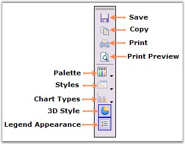
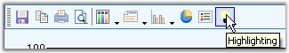
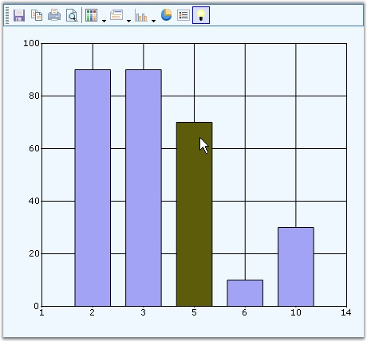

Essential Charts comes with a built-in Toolbar that can be made visible to enable the user to do the following during runtime.
· Save the chart as an image.
· Copy the image to clipboard.
· Print the chart.
· Print Preview of the Chart.
· Change the color palette of the chart.
· Affects the style of the chart.
· Change the Chart Type.
· Toggle 3D style of the Chart.
· Toggle Legend Appearance.
The toolbar can be made visible through the ChartControl's ShowToolbar property.
The toolbar looks like the below image.

Figure 294: Built-In Chart Toolbar
The toolbar commands and their functionalities are described below.
|
Chart toolbar Commands |
Chart toolbar Items name |
Description |
|
Save |
ChartToolbarSaveItem |
Using this command, user can save the chart to a specific location. |
|
Copy |
ChartToolBarCopyItem |
Clicking this toolbar command will copy the chart to the clipboard. |
|
Styles |
ChartToolBarStyleItem |
This popsup a Chart Series Style dialog window, using which various properties and chart styles can be set. |
|
|
ChartToolBarPrintItem |
This toolbar command is used to print the Chart. |
|
Palette |
ChartToolBarPaletteItem |
Palette for the series can be chosen at run time using this command. All palette colors available in the designer will be available in this Palette option also. |
|
Chart Types |
ChartToolBarTypeItem |
Any chart type can be set for the chart at run time using this command. |
|
Print Preview |
ChartToolBarPrintPreviewItem |
This toolbar command is used to see a print preview of the Chart. |
|
ChartToolBarSeries3DItem |
This command is used to toggle the 3D mode of the chart. | |
|
ChartToolBarShowLegendItem |
This command is used to toggle the legend appearance. | |
|
Splitter |
ChartToolBarSplitter |
This item provides a logical split between the collection of commands. |
Custom Toolbar Commands
You can also add custom toolbar items using ChartToolBarCommandItem class. The ChartCommands enum lists the commands that can be added. The following table describes those commands.
|
Chart toolbar Custom Commands |
Description |
|
ZoomIn |
Using this command, user can zoom the chart. |
|
ZoomOut |
This command zooms out the chart. |
|
ResetZooming |
The zooming is reset using this command. |
|
AutoHighlight |
This command is used to enable the autohighlight feature in the chart series. |
|
ToggleXZooming |
This toolbar command enables zooming in x-axis. |
|
ToggleYZooming |
This toolbar command enables zooming in y-axis. |
|
TogglePanning |
This command enables panning of the zoomed chart. |
|
[C#]
ChartToolBarCommandItem x1 = new ChartToolBarCommandItem(); x1.Command = ChartCommands.AutoHighlight; x1.IsCheckable = false; Image v = System.Drawing.Image.FromFile(@"..\..\Data\Visio.png"); x1.Image = v; x1.Name = "Custom Tools"; x1.ToolTip = "Highlighting"; x1.Checked = true; this.chartControl1.ToolBar.Items.Add(x1); |
|
[VB.NET]
Dim x1 As New ChartToolBarCommandItem() x1.Command = ChartCommands.AutoHighlight x1.IsCheckable = False Dim v As Image = System.Drawing.Image.FromFile("..\..\Data\Visio.png") x1.Image = v x1.Name = "Custom Tools" x1.ToolTip = "Highlighting" x1.Checked = True Me.chartControl1.ToolBar.Items.Add(x1) |

Figure 295: CustomCommand = "ChartCommands.AutoHighlight" ; Command ToolTip = "Highlighting"

Figure 296: AutoHighlight feature enabled in Chart using Custom Toolbar Command
 Toolbar Properties
Toolbar Properties